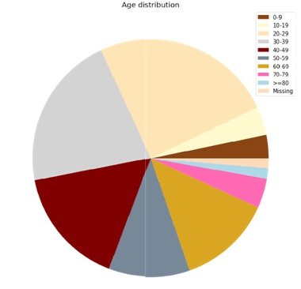
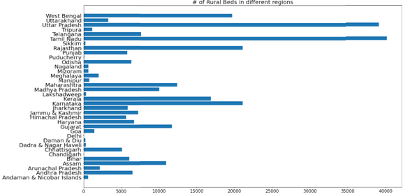
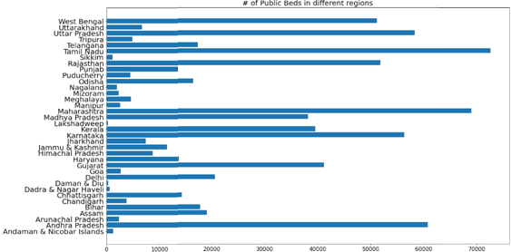

1 / 6

2 / 6

3 / 6

4 / 6

5 / 6

6 / 6

Query - News has Reported that, Covid-19 is more likely to affect elder population compared to the youth, is that true?
Analysis of number of public health facilities and number of beds: As The Prime Minister has asked you to plan the migration plans of the labours as it
has become a huge problem, we want them to get the facilities but we have limited resources in cities, how will you handle this situation?
Private Hospitals Cost of Treatment is Unaffordable for the Labours, Does all the above queries change there result when we try to focus on public hospitals as hospitals for the poor ?
Analysis of ICMR testing Labs in the country
Government VS private labs
Does Every City needs to evacuate the daily wage workers from the cities?